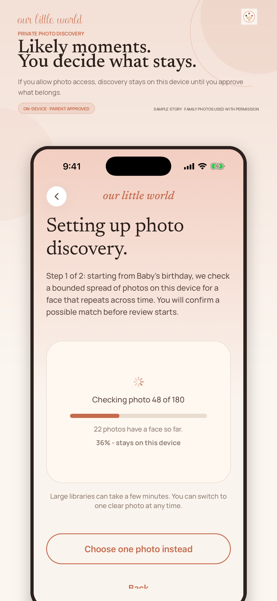
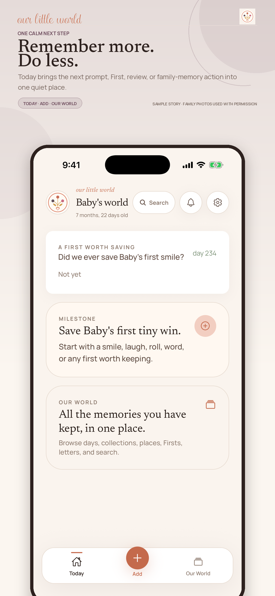
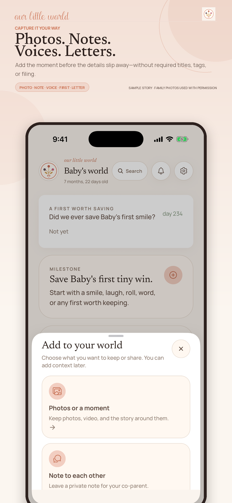
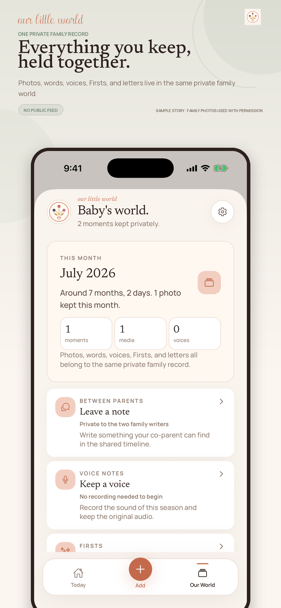
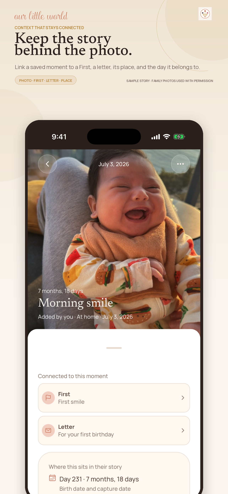
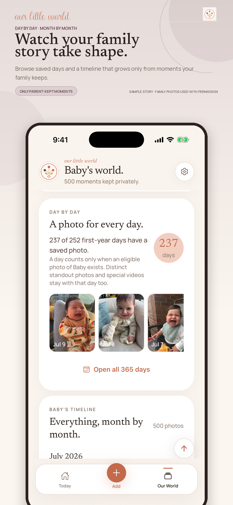
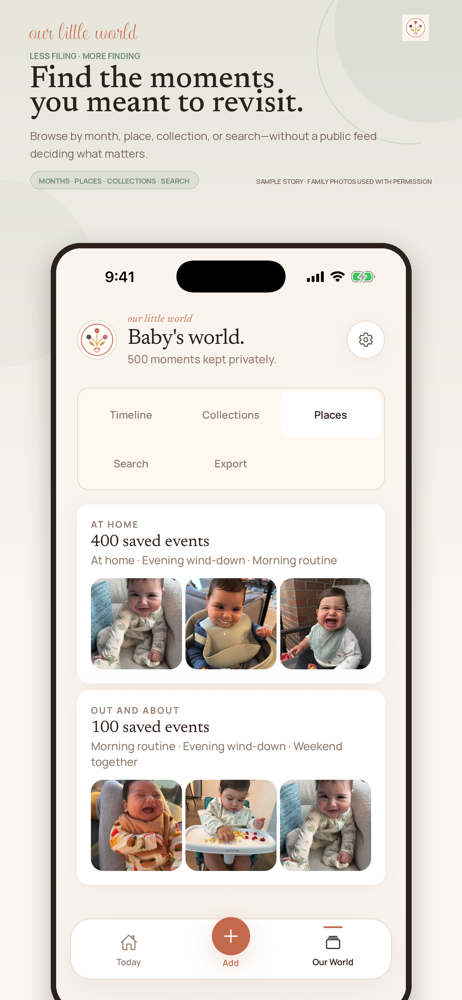
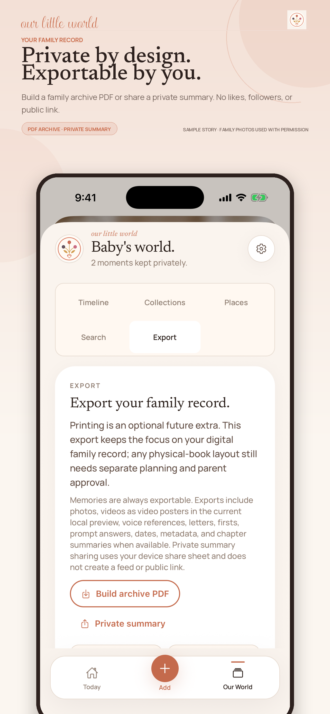

A real product story, not placeholder screens.
Eight iPhone 6.5-inch assets built from the actual app UI. The sequence starts with the parent-controlled photo-discovery promise, then shows the calm daily flow, flexible capture, connected family record, retrieval, and private export.

You decide what stays
Optional, on-device discovery with explicit parent approval.

One calm next step
Today focuses the parent on one useful family-memory action.

Capture it your way
Photo, note, voice, First, and letter options in the real UI.

Everything held together
The private family record, with no public feed.

The story behind the photo
A saved moment can stay linked to its First, letter, and place.

Day by day
A timeline that grows only from moments the family keeps.

Find it again
Months, places, collections, and search without a public feed.

Private and exportable
A family archive PDF or private summary, controlled by parents.
Authorized family photos, genuine app UI.
These screens came from the dedicated OLW marketing simulator. The temporary preview access used during capture was removed afterward. Original photo files and metadata were not retained in the repository; only the approved in-app UI captures remain.
- The iPad assets are unchanged until genuine iPad UI is captured.
- The old uploaded App Store set has not been replaced remotely.
- Every public composite says the story is a sample and the family photos are used with permission.
- Regenerate with
python3 apps/mobile/app-store/generate_screenshots.py.